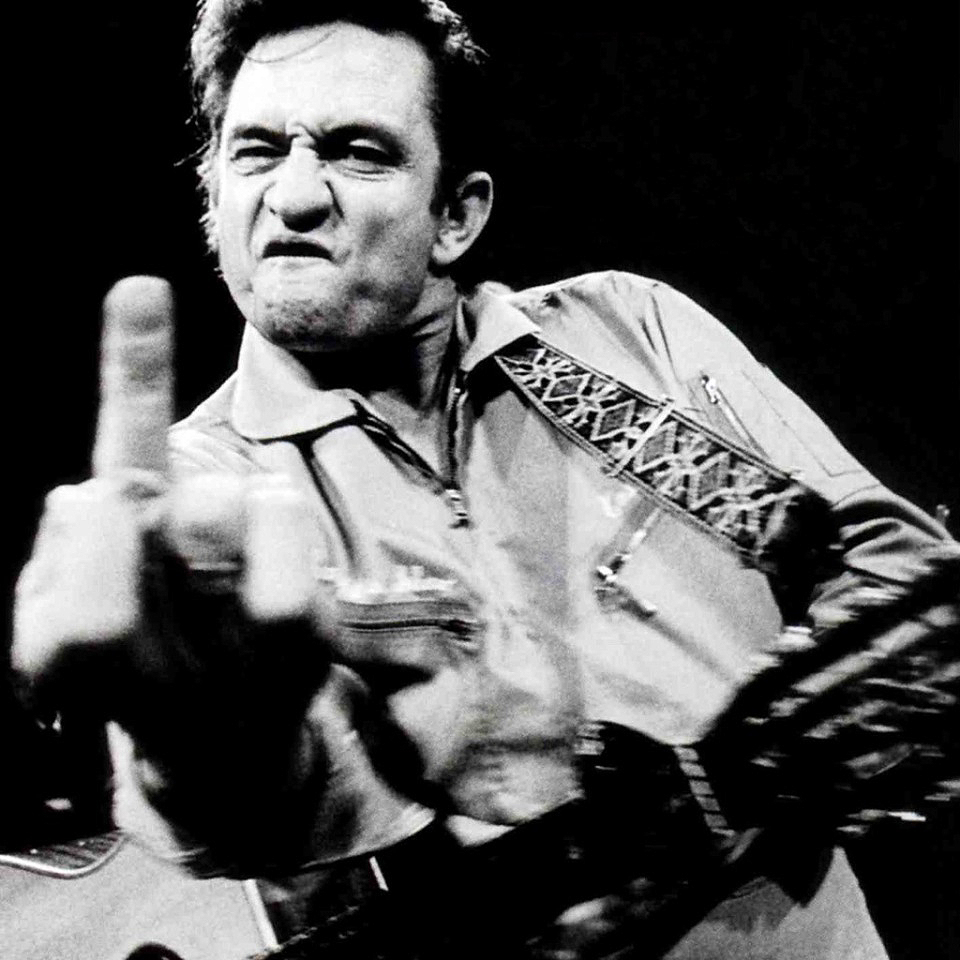

A Tribute to Johnny Cash
You can ask the people around me. I don't give up. I don't give up... and it's not out of frustration and desperation that I say I don't give up. I don't give up because I don't give up. I don't believe in it.
Timeline
- 1932: Born in Kingsland, Arkansas
- 1950: Joined United States Air Force
- 1954: Honorably discharged from USAF
- 1955: Released first recordings "Hey Porter" and "Cry! Cry! Cry!"
- 1957: Released first studio album "Johnny Cash with His Hot and Blue Guitar"
- 1959: Performed at San Quentin State Prison
- 1965: Married June Carter
- 1968: The Johnny Cash Show premieres on ABC
- 1980: Inducted into the Country Music Hall of Fame
- 1985: Formed "The Highwaymen" with Waylon Jennings, Willie Nelson, and Kris Kristofferson
- 1997: Diagnosed with Shy-Drager syndrome
- 2003: Died in Nashville, Tennessee
For more information, please read the Wikipedia entry.